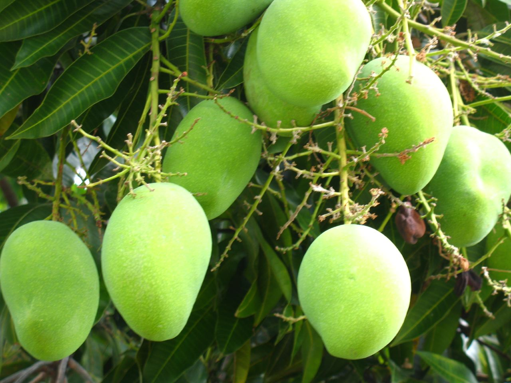

| Home |
Mango |
| 1. Mango Hoppers |
| 2. Stemborer |
| 3. Fruitfly |
| 4. Mango Nut Weevil |
| 5. Mango Mealy Bug |
| 6. Bark Eating Caterpillar |
| 7. Flower Gall Midge |
| 8. Mango Leaf Webber |
| 9. Shoot Borer |
| 10. Leaf Caterpillar |
| 11. Flower Webber |
| Questions |
| Download Notes |
Pests of Mango
 |
There are number of insect pests of this fruit and over 175 species of insect have been reported damaging mango tree but the most abundant and destructive at the flowering stage are the mango hoppers. Also mango mealy bug in North India, stem borer, fruit fly, mango nut weevil and caterpillar pests plat a major role in bringing down the yield. It is almost necessary to control these pests otherwise there is a heavy fruit drop and the trees may remain without fruit. |